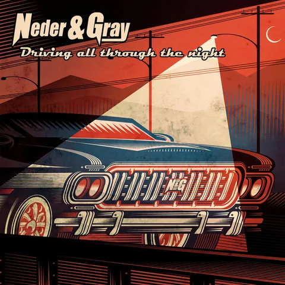

Engenharia de software · Arquitetura de soluções · Cloud
Matheus Neder
Especialista em Engenharia de Software na TOTVS
Engenheiro de computação com mais de 20 anos de experiência construindo software e definindo arquiteturas — da modernização de sistemas legados em grandes bancos a soluções que aplicam inteligência artificial à engenharia de software.
- Experiência
- 20+ anos em software e infraestrutura
- Setor financeiro
- Itaú Unibanco, Santander (Olé Consignado) e Banco Mercantil
- Nuvem
- AWS, GCP e Azure

Sobre
Profundidade técnica com visão de negócio
Sou engenheiro de computação formado pela PUC Minas e trabalho com tecnologia desde 2003, quando comecei como desenvolvedor web e administrador de sistemas Linux autônomo. Desde então, passei por desenvolvimento de produtos, arquitetura de soluções e engenharia de software — boa parte desse tempo em instituições financeiras, onde confiabilidade, segurança e governança não são opcionais.
Como arquiteto, defini modelos de arquitetura para a transição de ecossistemas baseados em mainframe para aplicações nativas de nuvem, com arquiteturas híbridas que permitem migrar de forma gradual, sem interromper a operação. Também participei da adoção de um dos primeiros clusters Kubernetes on-premises de Belo Horizonte e da reformulação de serviços com arquitetura orientada a eventos sobre Apache Kafka.
Hoje, na TOTVS, desenvolvo um componente que traduz instruções SQL em tempo de execução, com apoio de inteligência artificial, para que aplicações escritas para o Microsoft SQL Server também operem com Oracle Database e PostgreSQL. Também contribuo para a sustentação da TOTVS Cloud.
Busco equilibrar desempenho, escalabilidade, interoperabilidade e custo, e dou a mesma atenção a problemas rotineiros e urgentes do dia a dia. Trabalho bem em equipes multidisciplinares e distribuídas, com liderança técnica, mentoria e orientação sobre boas práticas como parte natural do trabalho.
Experiência profissional
Trajetória
-
– atual
Especialista em Engenharia de Software
TOTVS · TOTVS Cloud
Concebi e entreguei um componente que interpreta, traduz e reescreve instruções SQL em tempo de execução, permitindo que aplicações originalmente dependentes do Microsoft SQL Server operem também com Oracle Database e PostgreSQL.
- IA na tradução de SQL: uso de inteligência artificial para reescrever instruções de forma adaptativa, respeitando sintaxe e semântica de cada banco de dados e tratando casos complexos com mais eficiência do que abordagens baseadas apenas em regras fixas.
- Compatibilidade preservada: desempenho e compatibilidade mantidos para customizações existentes, desenvolvidas internamente, por clientes ou por parceiros.
- Impacto no produto: parte da estratégia da TOTVS de ampliar a flexibilidade dos seus produtos e oferecer aos clientes alternativas de infraestrutura com custos otimizados.
- Sustentação da TOTVS Cloud: disponibilidade, desempenho e confiabilidade da infraestrutura e dos serviços, com apoio à resolução ágil de incidentes e demandas críticas de clientes.
-
–
Arquiteto de Soluções Sênior
Banco Mercantil
Responsável pelos modelos de arquitetura para a transição de um ecossistema legado baseado em mainframe para aplicações modernas em nuvem pública, com convivência entre as duas gerações de tecnologia e migração gradual e segura, sem interromper a operação, em um ambiente crítico e altamente regulado.
- Arquiteturas híbridas para sustentar a transição entre mainframe e nuvem.
- Adoção de tecnologias de código aberto para evitar dependência de fornecedores específicos.
- Padrões e diretrizes para aplicações nativas de nuvem capazes de operar em diferentes provedores; AWS e GCP foram adotados durante a transição.
- Integração de sistemas legados com novas soluções, com foco em interoperabilidade, resiliência e baixo acoplamento.
- Apoio técnico às equipes de negócio e desenvolvimento, alinhando a arquitetura aos objetivos estratégicos da organização.
-
–
Arquiteto de Soluções Sênior
Itaú Unibanco
Atuação totalmente remota na equipe de Arquitetura de Soluções, durante a transformação do banco para uma estrutura organizada por linhas de negócio, com mais autonomia das equipes nas decisões de arquitetura.
- Reformulação da arquitetura do processo de oferta de crédito, dentro da iniciativa de substituir sistemas legados em mainframe por microsserviços escaláveis projetados para a AWS.
- Trabalho com diversas áreas para garantir aderência aos padrões de escalabilidade, segurança e governança da organização.
-
–
Arquiteto de Soluções
Banco Olé Consignado · Santander Brasil
Liderei a equipe de arquitetura de soluções do Olé Consignado, então subsidiária do Santander, atuando na modernização da infraestrutura tecnológica e nas decisões técnicas da área de empréstimos consignados.
- Nuvem privada e microsserviços: implantação e adoção de um dos primeiros clusters Kubernetes on-premises em Belo Horizonte, viabilizando aplicações baseadas em microsserviços e práticas DevOps.
- Arquitetura orientada a eventos: reformulação dos serviços de comissionamento do banco com comunicação assíncrona via Apache Kafka, ampliando escalabilidade e rastreabilidade das operações.
- Qualidade de entrega: definição de um processo de desenvolvimento com revisões sistemáticas de código e testes automatizados com cobertura mínima, reduzindo retrabalho.
- Compartilhamento de conhecimento: treinamentos e apresentações internas sobre engenharia de software, arquitetura e DevOps.
-
–
Analista Desenvolvedor
WebAula (atual UOL Edtech)
Manutenção e evolução do LMS WebAula, reconhecido como a maior plataforma de e-learning do Brasil até 2017, em projetos com foco em acesso móvel, desempenho e escalabilidade.
- Trilhas de Aprendizagem: liderei a criação do módulo — arquitetura, modelagem de dados e desenvolvimento — e capacitei a equipe nas novas tecnologias.
- Player HTML5 do Cloud Studio: reprodução de conteúdo multimídia diretamente no navegador para a ferramenta de autoria de cursos.
- Mobilidade: reformulação dos aplicativos Android e iOS e adaptação da ferramenta de avaliações para dispositivos móveis.
- Busca: serviço de indexação do módulo de Perguntas e Respostas com Apache Solr.
- Confiabilidade: automação da publicação de bibliotecas internas, resolução de vazamentos de memória e otimização de desempenho.
Início de carreira
-
–
Estagiário · CONAB – Companhia Nacional de Abastecimento
-
–
Analista Desenvolvedor · AHMG / Hospital Vila da Serra
-
–
Programador e administrador de sistemas · Autônomo
Soluções web sob medida em PHP, MySQL e JavaScript para empresas locais — como um sistema de pedidos online para a Companhia Têxtil São-Joanense, a entrega de resultados de exames para o Laboratório Unimed São João del-Rei e a avaliação de proficiência em idiomas para a Cultura Inglesa São João del-Rei. Em paralelo, administrei servidores Linux de hospedagem e e-mail (Apache, Postfix, MySQL), com automação de backups e provisionamento e isolamento de ambientes com chroot jails.
Competências
Áreas de especialização
Organizadas pelo tipo de problema que resolvem, com as tecnologias que usei na prática.
-
Arquitetura de software e soluções
Arquiteturas híbridas, microsserviços resilientes, integração entre sistemas e decisões que equilibram desempenho, escalabilidade, interoperabilidade e custo.
-
Modernização de sistemas legados
Transição de ecossistemas baseados em mainframe para a nuvem, com convivência entre tecnologias e migração gradual, sem interromper a operação.
-
Sistemas distribuídos e eventos
Comunicação assíncrona, arquiteturas orientadas a eventos e rastreabilidade em ambientes de alta criticidade.
-
Cloud, Kubernetes e DevOps
Aplicações nativas de nuvem e portáveis entre provedores, infraestrutura como código e plataformas baseadas em contêineres.
-
Bancos de dados e busca
Modelagem, desempenho e interoperabilidade entre SGBDs — incluindo a tradução de SQL entre SQL Server, Oracle e PostgreSQL.
-
IA aplicada à engenharia de software
Uso de IA dentro de produtos, como na reescrita adaptativa de SQL, e no próprio processo de desenvolvimento, com desenvolvimento orientado a especificações.
-
Linguagens de programação
Experiência ampla, do back-end corporativo a sistemas de baixo nível.
-
Práticas de engenharia e liderança
Qualidade como processo: revisão de código, testes automatizados, mentoria e orientação técnica de equipes.
-
Linux e infraestrutura
Base sólida em administração de sistemas, redes, automação e segurança de serviços.
Também trabalhei com: ASP.NET MVC e Web API, Entity Framework, NHibernate, Xamarin (iOS, Android e Forms), Android, Angular, Node.js, Clojure, PHP, Firebird, VB6/COM+, Win32, Boost, GTKmm e Arduino.
Projetos e contribuições
Código aberto, pesquisa e apresentações
Contribuições para projetos de código aberto
-
Kubernetes — correção no addon Fluentd
Correção do formato de log
docker.logna configuração do addon Fluentd. Pull request incorporado ao projeto oficial. -
Documentação do Kubernetes — link da seção vsphereVolume
Correção de âncora na documentação oficial. Outra correção na documentação foi incorporada no mesmo ano (pull request #9564).
-
Prism — ObservesProperty em tipos complexos
Nova funcionalidade no
DelegateCommandda Prism, projeto da .NET Foundation: observar propriedades de tipos complexos.
Repositórios públicos selecionados
-
Xamarin.Forms.ImagePicker
Seletor de imagens com recorte para Xamarin.Forms.
-
helm-apply
Instalação e atualização de configurações Kubernetes baseadas em Helm.
-
maverick
Modelo de arquitetura para projetos .NET Core baseado na Arquitetura Hexagonal.
-
environmental-stressor
Aplicação ASP.NET Core para testar ambientes como servidores e clusters.
Pesquisa e apresentações
-
2018
Docker e Kubernetes: aprenda a conteinerizar e gerenciar seus aplicativos com as principais tecnologias do mercado
Palestra no Raja Valley Summit Tech (BHS/Axter).
-
2010–11
Aprendizagem móvel para usuários com limitações decorrentes da idade
Iniciação científica no Instituto de Informática da PUC Minas: aplicativos para Android 1.6 voltados à avaliação comparativa de usabilidade. Apresentado no 19º Seminário de Iniciação Científica da PUC Minas (2011).
Formação
Formação acadêmica e reconhecimentos
Graduação
Engenharia de Computação
Pontifícia Universidade Católica de Minas Gerais (PUC Minas) · 2008 – 2017
Prêmios
- 2011
Destaque Acadêmico
Engenharia de Computação, PUC Minas — primeiro semestre.
- 2009
ACM ICPC
International Collegiate Programming Contest — Fase Final Brasileira.
- 2008
Destaque Acadêmico
Engenharia de Computação, PUC Minas — segundo semestre.
Formação complementar
- 2019
Lean Six Sigma Yellow Belt
Treinamento em modelagem de processos (8 horas).
- 2009
Students to Business Program
Desenvolvimento web com ASP.NET no Microsoft Innovation Center (94 horas).
Idiomas
Português
Nativo.
Inglês
Leitura e escrita avançadas; conversação intermediária.
Contato
Vamos conversar
Para oportunidades, projetos ou conversas técnicas, estes são os canais mais diretos.
Fora do trabalho
Música
Fora da tecnologia, toco guitarra. Em 2011, comecei a publicar composições instrumentais na internet e, a partir delas, surgiu o Neder & Gray: uma parceria com o cantor e letrista inglês Johnny Gray, que escreveu letras e melodias de voz sobre as minhas faixas.
O som remete ao rock e ao hard rock dos anos 1970, com guitarras mais saturadas. Gravamos à distância — eu, guitarras e baixo em Belo Horizonte; Johnny, as vozes em Leeds, na Inglaterra — trocando arquivos pela internet. Gary Moore, Steve Vai, Joe Satriani e Zakk Wylde estão entre as minhas referências.

O vídeo é carregado do YouTube somente ao clicar.
